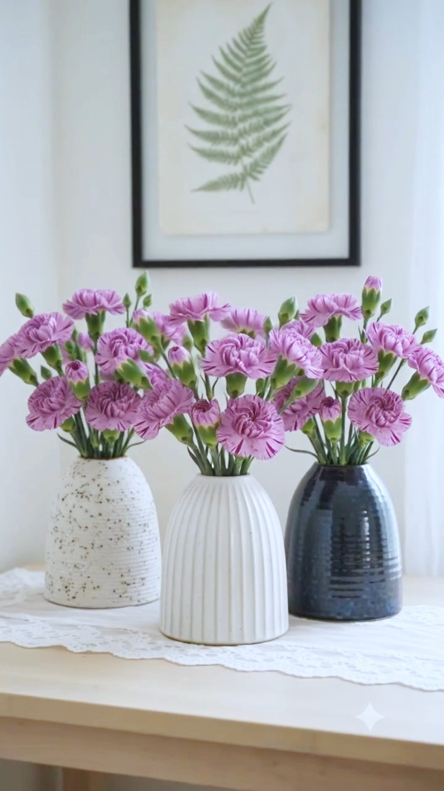
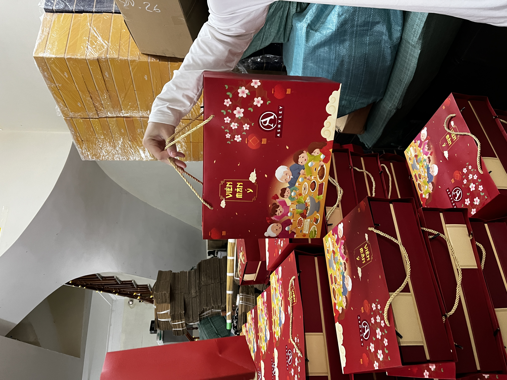
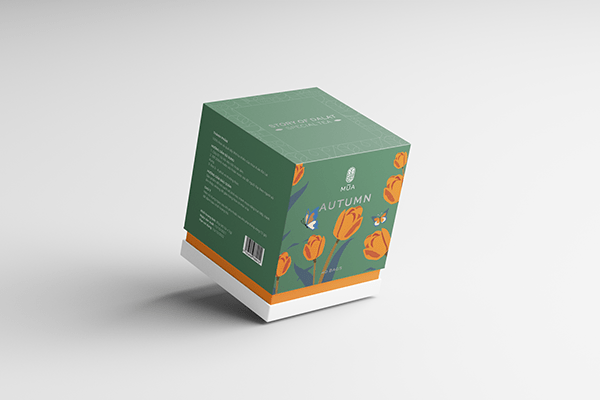

HÀ NỘI · SẴN SÀNG FULL-TIME
Xin chào, tôi là
LÊ MINH ĐỨCAI & SÁNG TẠO
Người làm sáng tạo, vận hành đội ngũ
và xây quy trình tốt hơn với AI.
01 / TÓM TẮT
Tôi không đi từ code.
Tôi đi từ vấn đề thật trong team.
Nền tảng quay-dựng và điều hành đội media giúp tôi hiểu rõ áp lực deadline, dữ liệu phân tán và những điểm đứt gãy trong một quy trình sáng tạo. Từ đó, tôi thiết kế logic vận hành rồi kết hợp AI/no-code để biến nó thành hệ thống dùng được.
02 / DẤU ẤN NỔI BẬT
sản lượng team Media duy trì
đúng tiến độ
01–06/2026
cho một dự án khách hàng
03 / DỰ ÁN
Một vài dự án
tiêu biểu.
Các hệ thống, quy trình và sản phẩm tôi trực tiếp xây dựng, vận hành hoặc sản xuất.
AI & VẬN HÀNH / 5NAL / 202601
Hệ thống quản lý tiến độ
và Bot 5nal
Thiết kế logic Sheet/Lark Base và bot báo cáo, cảnh báo deadline, theo dõi rủi ro, hỏi–đáp tiến độ cho Media và Account.
Quy trình · Bot · No-code
AI VIDEO SYSTEM / CÁ NHÂN / 2025–2602
Dreamy Days
AI Production System
Hệ thống multi-agent và batch generation phục vụ kênh YouTube AI do tôi tự xây dựng, vận hành.
Multi-agent · Google Flow

AI BATCH PRODUCTION / 202603
Tool sản xuất
video AI hàng loạt
Workflow từ Sheet yêu cầu đến prompt, tạo và ghép video hoàn chỉnh cho 150 video sản phẩm trong 5–7 ngày.
Workflow · UI · Batch
TUẤN
NGHĨA
NGHĨA
PHIM DOANH NGHIỆP / 202404
Tuấn Nghĩa Group
Một trong ba quay phim; phụ trách flycam và dựng. Phim được sử dụng tại lễ ký kết, giới thiệu doanh nghiệp với đối tác quốc tế.
Camera · Flycam · EditorXem phim ↗
MK+
TVC / 202405
MK+
Quay phụ, dựng chính và color grading cho TVC ra mắt thị trường Việt Nam của thương hiệu mỹ phẩm Hàn Quốc.
Editor · ColoristXem TVC ↗
VINAVIC
PHIM DOANH NGHIỆP / 202506
Vinavic
Dựng chính và color grading cho phim doanh nghiệp đầu tiên phục vụ truyền thông đa nền tảng và giới thiệu đối tác.
Editor · ColoristXem phim ↗
JPSC
PHIM DOANH NGHIỆP / 202307
JPSC
Quay và dựng chính phim doanh nghiệp đầu tiên, giúp khách hàng giới thiệu năng lực với các trường, đối tác Hàn Quốc.
Camera · EditorXem phim ↗

MERAKIPACKAGING / 202308
Hộp quà Tết Meraki
Thiết kế ba mẫu hộp quà và 20 nhãn sản phẩm; phối hợp trực tiếp với nhà in. Hơn 500 hộp được bán trong mùa Tết 2023.
Packaging · Print production

BRAND IDENTITY / 202109
MÙA — Trà hoa quả sấy khô
Dự án cuối kỳ FPT Arena, đạt điểm cao nhất lớp trong giai đoạn học trực tuyến vì Covid-19.
Brand identity · PackagingXem dự án ↗
04 / CÁCH TÔI LÀM VIỆC
Không chạy theo tool.
Xây từ quy trình cần tốt hơn.
Đọc vận hành
Quan sát công việc thực tế, điểm chờ và dữ liệu cần thiết trước khi chọn công cụ.
Thiết kế logic
Chuyển nhu cầu thành luồng dữ liệu, quy tắc và trải nghiệm đủ đơn giản để team dùng.
Test cùng đội ngũ
Thử nghiệm, training, nhận phản hồi và tinh chỉnh để workflow đi vào vận hành.
05 / LIÊN HỆ